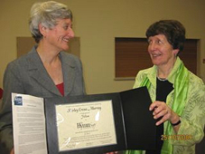
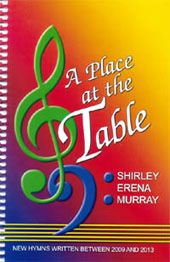

|
|
564陌生路人站門外 |
Stranger, standing at my door, you disturb me in the night: you have needs I can't ignore, you have eyes that speak your plight. Do I know you, nameless face, battered woman, detainee, hungry youth or sickness case, jobless parent, refugee-- Do I know you, nameless face? You are strange in speech and dress, you have children at your side, you are not like one of us-- you have begged away your pride. If you passed across my screen I might switch you out of sight, worlds away you might have been, yet you stand here in the night. Do I know you, nameless face? I am fearful of your claim, yet I cannot turn away. Stranger with the foreign name, are you angel come to stay? You are messenger and guest, you the Christ I can't ignore, you my own compassion's test, stranger, standing at my door. You, the Christ I can't ignore.
|
|
|
https://musiklus.com/product/stranger-standing-at-my-door/
|
|
|
|
|


新普天頌讚 #564 陌生路人站門外 聖詩分析https://www.hkchurchmusic.org/index.php/component/allvideoshare/video/hup564 -
A. Hicks, pianist Based on the tune "Stranger" by Jane Manton Marshall (2008) and text by Shirley Erena Murray (1997), with a coda on "Forest Green," for the text "What kind of shepherd seeks the sheep" by Adam Tice (2013) https://youtu.be/HqaKzsR78sY
| Short Name: | Shirley Erena Murray |
| Full Name: | Murray, Shirley Erena, 1931- |
| Birth Year: | 1931 |
| Death Year: | 2020 |
Shirley Erena Murray (b. Invercargill, New Zealand, 1931)

studied music as an undergraduate but received a master’s degree (with honors) in classics and French from Otago University. Her upbringing was Methodist, but she became a Presbyterian when she married the Reverend John Stewart Murray, who was a moderator of the Presbyterian Church of New Zealand. Shirley began her career as a teacher of languages, but she became more active in Amnesty International, and for eight years she served the Labor Party Research Unit of Parliament. Her involvement in these organizations has enriched her writing of hymns, which address human rights, women’s concerns, justice, peace, the integrity of creation, and the unity of the church. Many of her hymns have been performed in CCA and WCC assemblies. In recognition for her service as a writer of hymns, the New Zealand government honored her as a Member of the New Zealand Order of Merit on the Queen’s birthday on 3 June 2001. Through Hope Publishing House, Murray has published three collections of her hymns: In Every Corner Sing (eighty-four hymns, 1992), Everyday in Your Spirit (forty-one hymns, 1996), and Faith Makes the Song (fifty hymns, 2002). The New Zealand Hymnbook Trust, for which she worked for a long time, has also published many of her texts (cf. back cover, Faith Makes the Song). In 2009, Otaga University conferred on her an honorary doctorate in literature for her contribution to the art of hymn writing.
I-to Loh, Hymnal Companion to “Sound the Bamboo”: Asian Hymns in Their Cultural and Liturgical Context, p. 468, ©2011 GIA Publications, Inc., Chicago
紐西蘭女詩人茉瑞雪莉（Shirley Murray，1931 生）
她的赞美诗写作始于1970年代，经常将圣安德鲁教堂用作圣诗集的测试场所。 许多不同的作曲家都在她的赞美诗中加入了音乐。她的赞美诗已被翻译成多种欧洲和亚洲语言，并在全球140余首赞美诗中都有代表。 除新西兰外，它们还特别用于北美。
HYMN of Murray, Shirley Erena
Shirley Erena Murray, who died in Wellington, NZ, on 25 January, 2020, is
one of Singing the Faith’s ten most represented authors. She is also the only
woman within that group. Neither of these facts is insignificant (her name
didn’t appear at all in the 1983 UK Methodist hymn book, Hymns & Psalms).
Undoubtedly more important to Shirley herself, however, was the fact that her
work represents the hymnody and voice of her homeland, New Zealand.
Born in 1931 and raised in a Methodist family, Shirley married a Presbyterian
minister, John Murray (later a Moderator of the Presbyterian Church of New
Zealand) and some of her earliest hymns were responses to John’s need for an apt
text to accompany a particular sermon or service. But the main impetus that
transformed Shirley over the years from an occasional writer of hymns into a
prolific author with a distinctive voice was her desire to express Christian
faith in a contemporary way from out of her distinctively New Zealand
experience.
 Shirley
Murray's passion for her homeland informs her hymn writing
Shirley
Murray's passion for her homeland informs her hymn writing
"The reason why I began to write hymns is… connected to the ethos of being a New
Zealander. We have an attitude of 'do it yoursel'’ – a kind of pioneer spirit
which is not intimated by too much tradition and actually welcomes
inventiveness. It seemed to me that the hymns we sang had no resonance with the
world I lived in… there was no imagery that evoked a particular environment, no
landscape of thought to accommodate the southern hemisphere (think of 'In the
bleak midwinter' in high summer, for example), no connection with the Maori
culture of our society, which is officially bicultural, nothing to articulate
our own hopes and visions."*
Shirley and John were among the drivers for a New Zealand hymn book that would
be indigenous, ecumenical and contemporary. The result, published in 1993, was Alleluia
Aotearoa. (The Maori word Aotearoa commonly, though not exclusively, refers
to the entire country of New Zealand.) Shirley was also to become involved in
another product of "contextual" hymnody, the ground-breaking Asian hymnal Sound
the Bamboo (2000). She was asked by her friend, the Taiwanese
ethnomusicologist, Dr I-to Loh, to work on English-language versions of some of
the texts that he had collected. When she finally visited Taiwan, she recalls,
she was "overwhelmed by their appreciation there of what it meant to sing hymns
in one’s own idiom and culture".
One of Shirley's typically pointed hymns - while nevertheless entertaining - was her "Upside Down Christmas Carol". It reflects the reality of the festive season in the Southern hemisphere:
Carol our Christmas, an upside down Christmas:  
snow is not falling and trees are not bare.
Carol the summer and welcome the Christ Child,
warm in our sunshine and sweetness of air...
But writing out of a given context is not just about reflecting a climate or
landscape. It’s also about responding to the questions, issues and
preoccupations of those you live and work amongst. She said: "Because I live in
a highly secular society in Aotearoa/New Zealand, I am conscious of how the
stereotypes of Christianity can be cynically dismissed. I long to say that there
is so much to understand and embrace in the wisdom, spiritual treasury and
survival skills that Jesus has given the world." Shirley herself worked as a
teacher of languages, researcher (including for the Labour Party in Wellington)
and radio hymn programme producer. Her hymns and carols address a wide spectrum
of themes ranging from the seasons of the Church year to human rights, care of
creation, women's concerns and above all, peace. "Creating justice and joy means
walking into the territory of basic human rights, as Jesus did. It means being
aware of our own fragility as well as our planet's, and using technology
wisely."
"I have wanted to move to where Christ consciousness as well as Christian
conscience meshes with the world I experience in my own life and time. Almost
everything I have written revolves, ultimately, round the concept of ‘peace’ in
all its manifestations." See, for example, Child
of joy and peace (StF 194), Spirit
who broods (StF 396) and her powerful 1994 “protest against
violence”, God
weeps at love withheld (StF 700).
Peace, for Shirley Erena Murray, was a many faceted concept, always tied to
justice. It included being at one with our environment as well as with other
people. The 1991 hymn Touch
the earth lightly (StF 729) was in part a response to French
nuclear testing in the Pacific Ocean region and its impact on the communities in
the testing areas.
In 1987, the Presbyterian Church of Aotearoa/New Zealand gave Shirley a grant to
publish a small book of 28 texts for use in New Zealand churches – In Every
Corner Sing: new hymns to familiar tunes in inclusive language. The collection
"travelled", she says, and was taken up by the editors of the 1990 hymnal of the
Presbyterian Church USA. Subsequently, and in part because her work was
championed by hymn writer Brian
Wren, Hope Publishing produced a larger
collection of the same name with 84 texts. Other
collections followed and her work has appeared in more than 200 hymn books
and other collections worldwide and been translated into several languages.
Shirley noted that a significant number of her texts are carols - "not just
snow-free ones, but new ways of looking at the Incarnation". Even a quick glance
at the first
lines and titles of these carols suggests a writer who does not
take the traditional words and stories of Christmas for granted - "The Christmas
child is a troublesome child", "Three Faiths Carol", "Upside down Christmas"...
Singing the Faith includes the typically challenging Child
of joy and peace (StF 194), which Shirley headed "Hunger
Carol".
In recognition of her considerable services not only to the art of hymn writing
but also to the culture of New Zealand, in 2001 she was made a member of the New
Zealand Order of Merit. She was awarded an Honorary Doctorate of Literature from
the University of Otago in 2009 and was made a Fellow of the RSCM (2006) and the
Hymn Society of the US and Canada (2009).
(The title of that collection refers to one of Shirley's most well-known hymns,
"For everyone born, a place at the table". After some discussion it was decided
not to include this text in Singing the Faith because it was considered that the
line "abuser, abused, with need to forgive" could prove difficult and extremely
hurtful to anyone who had been in a situation of abuse.)
In the end, Shirley's task, as she saw it, was to write hymns that reflected
everyday experience, locally, nationally and globally. "I appreciate and relate
to precise and clean language," she wrote, "as opposed to flowery and fudgy. I
am, in knitting parlance, a plain rather than purl sort of writer. I like
language that gives a jolt of reality"
(See
which of Shirley's hymns are included in Singing the Faith.)
* Some of the material in this article has been adapted from Shirley’s
contribution to Janet Wootton (ed.) This
is our Song: women’s hymn-writing (2010: Epworth Press, London)
pp.295-307.